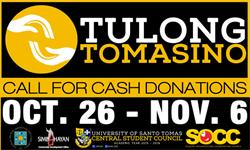

UST Museum exhibit features ‘adult coloring books’; stresses power of colors
Delving in a new exploration that teaches and communicates the value of arts to the public, the University of Santo Tomas (UST) Museum features works from “adult coloring books” in a month-long exhibit.
(Read More)UST, St. Mary’s University, London forge partnership
As a step towards establishing stronger ties and further amplifying its internationalization thrust, the University of Santo inked its 114th Memorandum of Understanding (MOU) this time with St. Mary’s University (SMU), Twickenham, London, the oldest Catholic university in the United Kingdom.
(Read More)US Ambassador to PH headlines UST’s 3rd Diplomats’ Lecture Series
Centering on the privileges and opportunities afforded by a career in diplomacy and foreign service, United States (US) Ambassador to the Philippines Philip Goldberg shared his experiences and functions as a diplomat during the University of Santo Tomas’ (UST) 3rd Diplomats’ Lecture Series last April 27 at the Paredes Bldg., UST, Manila.
(Read More)View all Events
UP COMING EVENTS
Details
Date:
December 16, 2016
Time:
11:30 am - 1:30 pm
Place: UST
